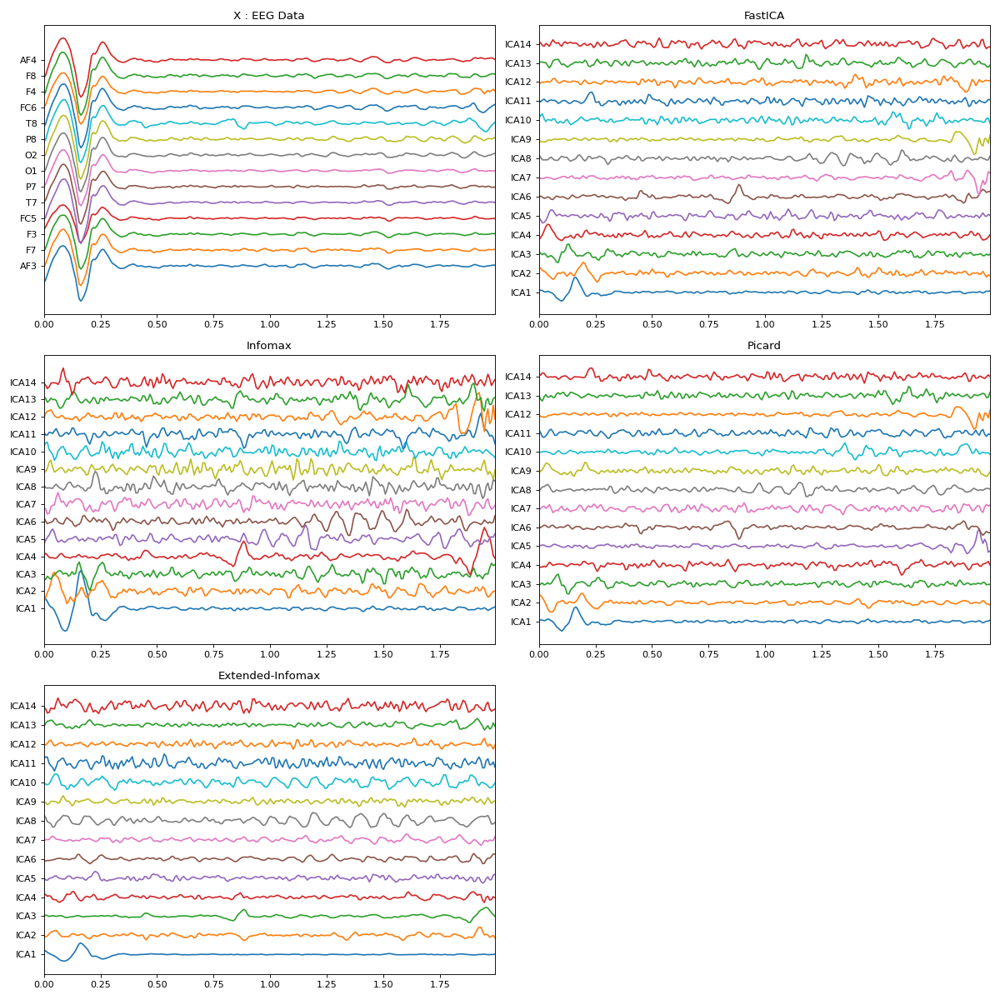

spkit.ICA¶
- class spkit.ICA(n_components=None, max_pca_components=None, n_pca_components=None, random_state=None, method='fastica', fit_params=None, max_iter=200)¶
Independent Component Analysis
Signal decomposition using Independent Component Analysis (ICA), very usefule for EEG signal decompositions Including InfoMax, Extendent InfoMax and Picard methods, default as FastICA as usual
\[ \begin{align}\begin{aligned}S = A*X\\X = W*S\end{aligned}\end{align} \]- where:
X : input data shape (nf,ns), nf- number of features or number of channels, ns- number of samples
S : decomposed data (n,ns) n - number of components choosen, default n=nf
A : Transform matirx (n,n)
W : inverse transform matrix (n,n)
Python implementation of the ICA algorithms: FastICA including, infomax, extendented infomax and picard.
- Parameters:
- n_componentsint, None
The number of components used for ICA decomposition. it must be smaller than ‘max_pca_components’.
If None, all PCA components will be used default None, set to max number of components
- max_pca_componentsint, None
The number of components used for PCA decomposition. If None, no dimensionality reduction will be applied and
max_pca_componentswill equal the number of channels (number of features) supplied for decomposing data.
- n_pca_components: int, float
The number of PCA components used after ICA recomposition.
- random_state: None, int,
instance of np.random.RandomState
- method{‘fastica’, ‘infomax’, ‘extended-infomax’, ‘picard’}
The ICA method to use. Defaults to ‘fastica’. For reference, see [1]_, [2]_, [3]_ and [4]_.
- fit_paramsdict, None
Additional parameters passed to the ICA estimator as specified by
method.- max_iterint
Maximum number of iterations during fit.
- Attributes:
- Estimated Values
- * pca_mean_
mean substacted from data before computing PCA
- * pca_components_
PCA transform matrix
- * pca_explained_variance_
variance of Principle components
- * unmixing_matrix_
ICA unmixing matrix A
- * mixing_matrix_
ICA mixing matrix W
- * whitener_
Standard deviaation of data before applying ICA
- * n_components
- * max_pca_components
- * n_pca_components
- * random_state
- * fit_params
Notes
- fit(self, X, normalize=False):
Fitting to data matrix X, X ndarray (nf,ns)
- transform(self, Xdata):
Decompose Xdata into Independent Components return Xd (ndarray)
- get_tMatrix(self):
Get Tranformation matrix return A (n,n)
- get_sMatrix(self):
Get Inverse Transform matrix return W (n,n)
- whitening(self, X):
To normlize the standard deviation of entire data (not the usual normailization)
References
- [1] Hyvärinen, A., 1999. Fast and robust fixed-point algorithms for
independent component analysis. IEEE transactions on Neural Networks, 10(3), pp.626-634.
- [2] Bell, A.J., Sejnowski, T.J., 1995. An information-maximization
approach to blind separation and blind deconvolution. Neural computation, 7(6), pp.1129-1159.
- [3] Lee, T.W., Girolami, M., Sejnowski, T.J., 1999. Independent
component analysis using an extended infomax algorithm for mixed subgaussian and supergaussian sources. Neural computation, 11(2), pp.417-441.
- [4] Ablin, P., Cardoso, J.F., Gramfort, A., 2017. Faster Independent
Component Analysis by preconditioning with Hessian approximations. arXiv:1706.08171
Examples
import numpy as np import matplotlib.pyplot as plt import spkit as sp X,fs, ch_names = sp.data.eeg_sample_14ch() Xf = sp.filterDC_sGolay(X, window_length=fs//3+1) x = Xf[128*10:128*12,:] t = np.arange(x.shape[0])/128.0 myICA = sp.ICA(n_components=14,method='fastica') myICA.fit(x.T) s1 = myICA.transform(x.T) myICA = sp.ICA(n_components=14,method='infomax') myICA.fit(x.T) s2 = myICA.transform(x.T) myICA = sp.ICA(n_components=14,method='picard') myICA.fit(x.T) s3 = myICA.transform(x.T) myICA = sp.ICA(n_components=14,method='extended-infomax') myICA.fit(x.T) s4 = myICA.transform(x.T) methods = ('fastica', 'infomax', 'extended-infomax', 'picard') icap = ['ICA'+str(i) for i in range(1,15)] plt.figure(figsize=(15,15)) plt.subplot(321) plt.plot(t,x+np.arange(-7,7)*200) plt.xlim([t[0],t[-1]]) plt.yticks(np.arange(-7,7)*200,ch_names) plt.title('X : EEG Data') plt.subplot(322) plt.plot(t,s1.T+np.arange(-7,7)*700) plt.xlim([t[0],t[-1]]) plt.yticks(np.arange(-7,7)*700,icap) plt.title('FastICA') plt.subplot(323) plt.plot(t,s2.T+np.arange(-7,7)*700) plt.xlim([t[0],t[-1]]) plt.yticks(np.arange(-7,7)*700,icap) plt.title('Infomax') plt.subplot(324) plt.plot(t,s3.T+np.arange(-7,7)*700) plt.xlim([t[0],t[-1]]) plt.yticks(np.arange(-7,7)*700,icap) plt.title('Picard') plt.subplot(325) plt.plot(t,s4.T+np.arange(-7,7)*700) plt.xlim([t[0],t[-1]]) plt.yticks(np.arange(-7,7)*700,icap) plt.title('Extended-Infomax') plt.tight_layout() plt.show()
 Methods
fit(X[, normalize])Fitting to data matrix X, X ndarray (nf,ns)
Get Inverse Transform matrix
Get Tranformation matrix
transform(Xdata)Decompose Xdata into Independent Components
whitening(X)Whitening of matrix
- fit(X, normalize=False)¶
Fitting to data matrix X, X ndarray (nf,ns)
Run the ICA decomposition on X.
- Parameters:
- X = array like:
Shape (nf,ns) or (nCh, nSamples)
- get_sMatrix()¶
Get Inverse Transform matrix
Get Final ICA weight matrix.
- Returns:
- Matrixarray, shape (n_channels, n_components)
The ICA weights (maps).
- get_tMatrix()¶
Get Tranformation matrix
- transform(Xdata)¶
Decompose Xdata into Independent Components
Compute sources from data (operates inplace).
- whitening(X)¶
Whitening of matrix